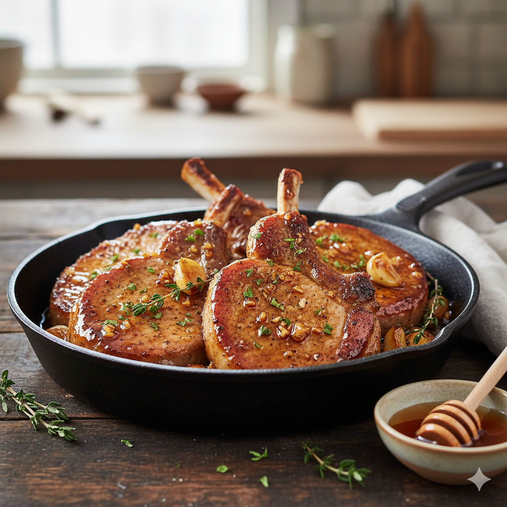

Honey Garlic Pork Chops
Home

Description
The Perfect Balance: Sticky Honey Garlic Pork Chops
Honey garlic pork chops are a triumph of sweet and savory harmony. This
dish transforms humble bone-in or boneless chops into a gourmet experience
with a glossy, addictive glaze that caramelizes beautifully under heat.
It’s the kind of meal that feels sophisticated enough for a weekend dinner
but is fast enough for a busy Tuesday.
What Makes Them Irresistible:
- The Glaze: A reduction of golden honey and pungent garlic, often brightened with a splash of soy sauce or apple cider vinegar. It creates a sticky, lacquered finish that clings to every bite.
- The Sear: Ideally started in a hot cast-iron skillet, the pork develops a deep, golden-brown crust (the Maillard reaction) before the sauce is added to deglaze the pan.
- Aromatic Depth: While the honey and garlic lead the way, fresh herbs like thyme or rosemary add an earthy undertone that cuts through the sweetness.
- The "Pan Sauce" Bonus: The leftover liquid in the pan becomes a concentrated syrup, perfect for drizzling over a side of mashed potatoes or steamed greens.
Ingredients
- 1⁄2 cpu ketchup
- 2 2⁄3 tablespoons honey
- 2 tablespoons low-sodium soy sauce
- 2 cloves garlic, crushed
- 6(4 ounce) (1 inch thick) pork chops
Steps
- Preheat grill for medium heat and lightly oil the grate. Gather ingredients
- Whisk ketchup, honey, soy sauce and garlic together in a bowl to make a glaze
- sear the pork chops on both sides on the preheated grill. Lightly brush glaze onto each side of the chops as they cook; grill until no longer pink in the center, about 7 to 9 mins per side. An instant-read thermometer inserted into the center should read 63 degrees C (145 degrees F)
- Serve hot and enjoy